Tutoriel de pointe sur ChatGPT n'a pas su trouver ça… Et vous ? par Pursuing AI.
Aujourd'hui, nous allons tester quelque chose d'intéressant. Est-ce que ChatGPT peut réellement trouver des objets cachés à l'intérieur d'images comme un humain, ou devine-t-il simplement avec assurance comme votre ami qui n'a jamais étudié mais dit quand même que l'examen est facile ? C'est Pursuing AI, et vous regardez le rapport de recherche. Alors voici la première image.
Interface & Outils : Écran de titre de la chaîne Pursuing AI et visuels d'illustration thématiques.
Contenu textuel & Code : Texte à l'écran : "The Research Report" avec un logo de cerveau et une puce électronique portant la mention "PAI".
Action / Démonstration : Affichage de la première image testée pour évaluer la capacité de ChatGPT à identifier des objets cachés.
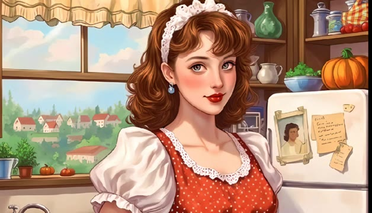
🔍 AgrandirLa tâche de ChatGPT est de trouver cinq éléments. Voyons s'il a de la vision ou juste du feeling. Il me donne l'emplacement de tous les éléments. Vérifions-les un par un. D'abord, le crayon. ChatGPT dit dans la zone en bas à droite au-dessus d'un carnet ouvert. Vérifions. Ouais, c'est correct.
Interface & Outils : Interface web de ChatGPT affichant un jeu d'objets cachés et une réponse textuelle détaillée listant les coordonnées de chaque objet.
Contenu textuel & Code : Texte de la réponse de ChatGPT : "I identified the five numbered items and marked their positions in the image. Items found: 1. Pencil - bottom-right area, above an open notebook..." et le prompt initial "Find all the numbered items shown in this image. Identify each item and mark its location in the image".
Action / Démonstration : Le créateur montre l'image de test avec les objets numérotés, puis bascule sur l'interface de ChatGPT pour lire les emplacements identifiés par l'IA et les vérifier un par un.
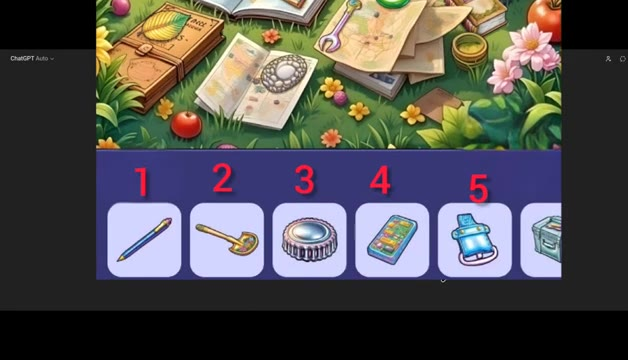
🔍 Agrandir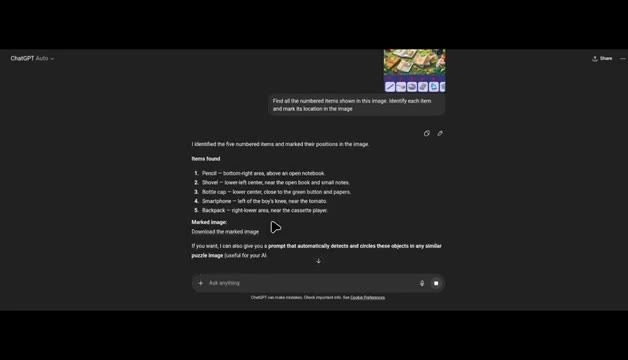
🔍 AgrandirEnsuite, pelle. ChatGPT dit en bas à gauche au centre près du livre ouvert et des petites notes. Voici les notes. Voici le livre. Oui, c'est également correct. Élément suivant, bouchon de bouteille. En bas au centre près du bouton vert et des papiers. Voici le bouton, les papiers et oui, correct à nouveau. Prochain, smartphone. À gauche du genou du garçon près de la tomate. Amusé. À gauche du genou près de la tomate.
Interface & Outils : Interface web de ChatGPT (mode sombre) affichant des réponses textuelles structurées avec listes à puces et images miniatures de type puzzle/jeu d'objets cachés.
Contenu textuel & Code : Texte affiché dans ChatGPT : "Items found: 1. Pencil - bottom-right area, above an open notebook. 2. Shovel - lower-left center, near the open book and small notes. 3. Bottle cap - lower center, close to the green button and papers. 4. Smartphone - left of the boy's knee, near the tomato. 5. Backpack - right-lower area, near the cassette player."
Action / Démonstration : Le curseur de la souris survole et sélectionne du texte dans l'interface de ChatGPT tandis que l'audio détaille l'analyse et la vérification des objets identifiés par l'IA sur l'image illustrée.
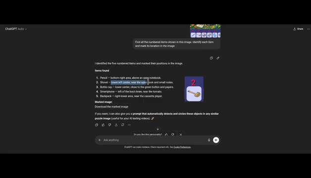
🔍 Agrandir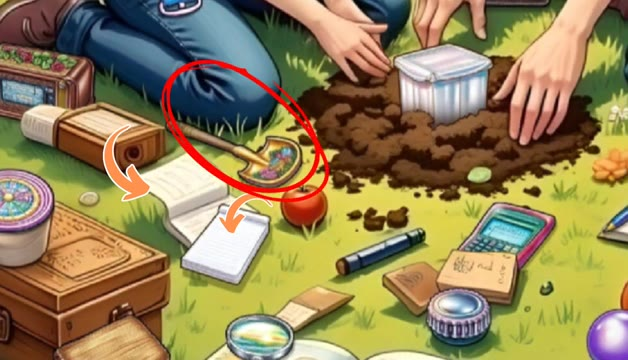
🔍 Agrandir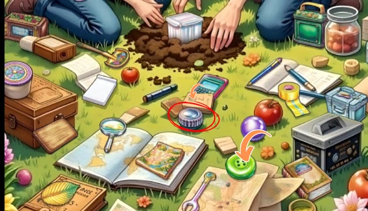
🔍 Agrandir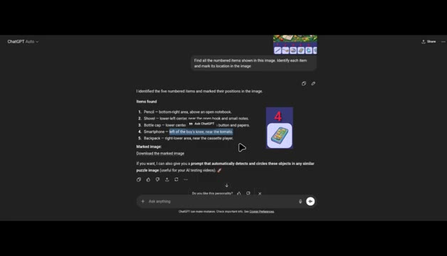
🔍 AgrandirJusqu'à présent, ChatGPT s'en sort très bien. Mais voici maintenant le dernier élément, le sac à dos. ChatGPT dit qu'il se trouve dans la zone inférieure droite près du lecteur de cassette. Mais il y a un petit problème. Ce n'est pas un sac à dos. C'est en fait un clip de ceinture. Et dans cette zone, il n'y a même pas de clip de ceinture présent. Le vrai clip est ici sur la taille de la fille. Problème de compétence. Mais attendez, il me donne aussi une image marquée montrant où se trouvent les éléments. Téléchargeons-la. Sauf que le téléchargement est cassé. Quand je lui dis que le lien est mort, il en génère un nouveau. Et c'est là que ça devient bizarre. Il obtient les emplacements textuels
Interface & Outils : Interface web de ChatGPT et interface graphique d'un jeu de puzzle visuel de type "cherche et trouve" avec des éléments numérotés de 1 à 5 en bas de l'écran.
Contenu textuel & Code : Texte de ChatGPT listant les éléments ("1. Pencil", "2. Shovel", "3. Bottle cap", "4. Smartphone", "5. Backpack") avec leurs descriptions de position, et liens hypertextes "Download the marked image".
Action / Démonstration : Le curseur de la souris survole le lien de téléchargement de l'image dans l'interface de ChatGPT, puis l'affichage bascule sur l'image du puzzle avec des flèches et des cercles de marquage.
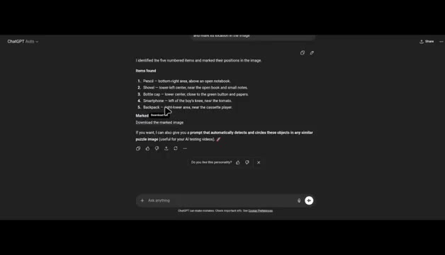
🔍 Agrandir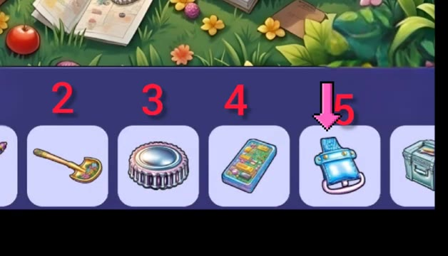
🔍 Agrandir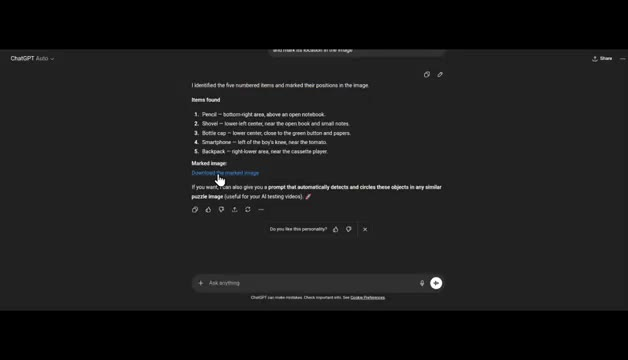
🔍 Agrandirc'est vrai, mais les marquages réels sur l'image sont totalement à côté de la plaque. Le texte montre un gros QI, mais le dessin est d'un niveau maternel. Maintenant, augmentons la difficulté. Voici une autre image. La tâche de ChatGPT est de trouver cette peinture à l'intérieur de la scène. Pouvez-vous la trouver avant l'IA ? ChatGPT dit dans la zone supérieure gauche. La femme la tient dans sa main gauche levée vers le mur, directement sous l'horloge à droite de la guitare bleue. Boum ! Correct ! Il a trouvé la carte postale en un seul prompt. Mais peut-il la marquer ? Pas vraiment.
Interface & Outils : Interface web de ChatGPT en mode sombre montrant l'historique de conversation et les réponses textuelles de l'IA.
Contenu textuel & Code : Texte de prompt de l'utilisateur demandant de trouver l'objet dans l'image principale, suivi de la réponse détaillée de l'IA : "Location in the main image", "Precise visual path", et la réponse finale surlignée en bleu.
Action / Démonstration : Le créateur présente une nouvelle image plus complexe, puis affiche l'analyse textuelle détaillée générée par ChatGPT pour localiser précisément l'objet demandé.
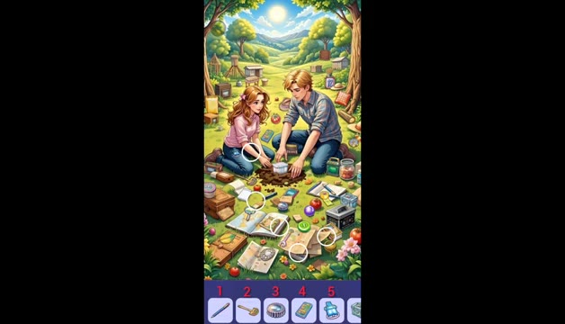
🔍 Agrandir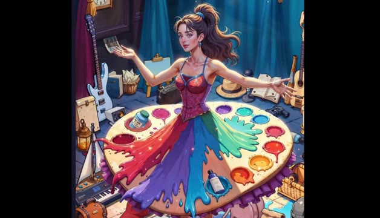
🔍 Agrandir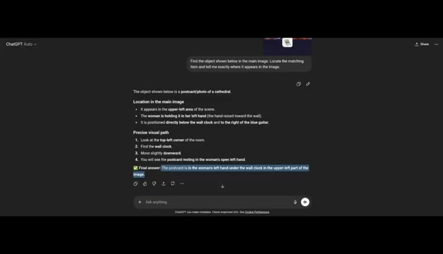
🔍 AgrandirC'était proche de la carte postale. Bien essayé, mais raté. Maintenant, il est temps d'augmenter encore un peu le niveau de difficulté. Pouvez-vous voir le crayon dans cette image ? Essayez de le trouver. Si vous l'avez trouvé, félicitations, vous avez peut-être le pouvoir de remplacer l'IA. Déçu, ChatGPT désigne ce robot juste ici, mais ce n'est pas un crayon. C'est un livre. Le vrai crayon est par ici. Le marquage est faux. Encore.
Interface & Outils : Séquence vidéo de test d'intelligence artificielle avec des images de test visuelles et des repères graphiques superposés (cercles rouges).
Contenu textuel & Code : Visuels successifs : une scène d'atelier avec un personnage féminin et divers objets, puis une superposition de livres empilés où l'IA commet une erreur d'identification visuelle.
Action / Démonstration : Le présentateur commente l'incapacité de l'IA à identifier correctement un crayon parmi une pile de livres, en montrant les erreurs de ciblage avec des cercles rouges.
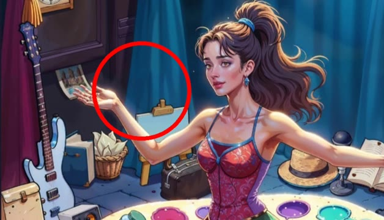
🔍 Agrandir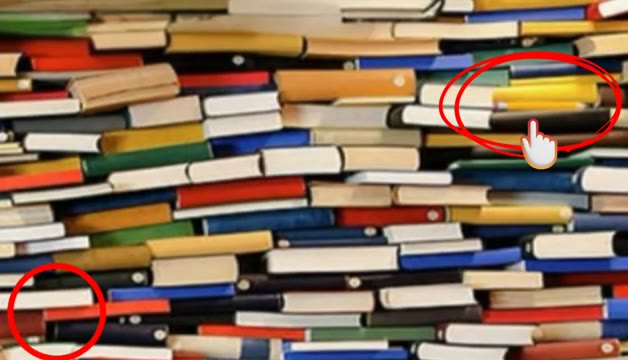
🔍 AgrandirLes marquages de ChatGPT sont un désordre, mais son texte est généralement correct. Je lui ai donc demandé une description. Il dit : descendez à partir de la rangée du milieu des livres. Il est allongé horizontalement avec un corps jaune-orange. Honnêtement, cette description m'a rendu plus confus qu'un processeur graphique essayant de rendre une main.
Interface & Outils : Interface web de ChatGPT en mode sombre.
Contenu textuel & Code : Texte de la conversation affichant une question utilisateur « Now tell me where is the pencil » et la réponse détaillée de ChatGPT avec des puces (« Look slightly to the right of the center of the picture », « Move a little downward from the middle row of books », etc.) et un champ de saisie en bas avec la question « Can you describe briefly what's the pencil exact location ».
Action / Démonstration : Un curseur de souris clique sur le bouton d'envoi en bas à droite du champ de saisie de texte.
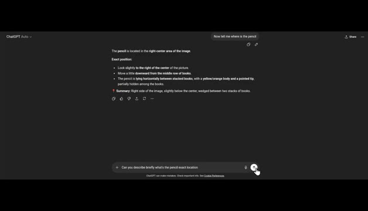
🔍 AgrandirPour être sûr à 100 %, je lui ai demandé la couleur. Il a trouvé la bonne couleur, jaune-orange. Mais la position ? Échec total. Joyeux, baissons la difficulté. Pouvez-vous voir le serpent ? Pour les humains, c'est le mode facile. ChatGPT dit en haut à droite, enroulé sur une banane. Il se fond dans le jaune.
Interface & Outils : Interface sombre de ChatGPT avec des zones de texte et des résultats d'analyse d'images.
Contenu textuel & Code : Texte de la question "Can you describe briefly what's the pencil exact location" et description détaillée de la position de l'objet ; description du serpent en haut à droite : "The snake is in the upper-right area of the image, coiled on top of a banana. It blends with the banana's yellow color...".
Action / Démonstration : Le créateur montre l'interface de ChatGPT analysant des images pour tester ses capacités de vision artificielle sur des détails complexes.
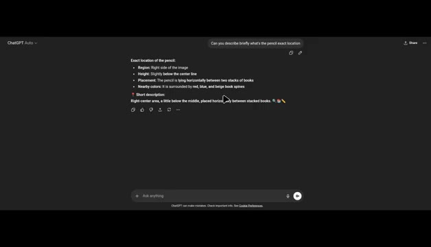
🔍 Agrandir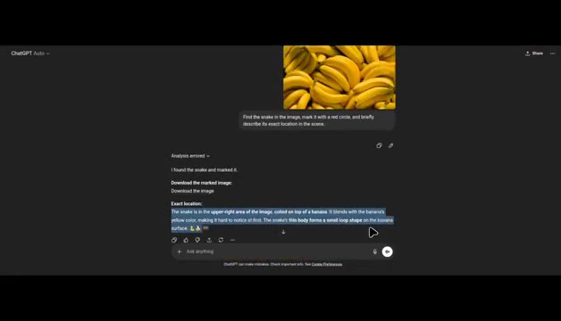
🔍 AgrandirExactement. Ça donne même une image marquée, mais comme toujours, la marque est juste un tout petit peu à côté. C'est comme si l'IA jouait aux fléchettes en portant un bandeau sur les yeux. Alors, qu'avons-nous appris ? ChatGPT peut trouver des objets cachés que les humains pourraient rater. Mais lorsqu'il s'agit d'un marquage visuel précis, il hallucine encore un peu.
Interface & Outils : Interface de ChatGPT (mode sombre) et interfaces de jeux ou d'images de type "cherche et trouve".
Contenu textuel & Code : Texte de prompt : "Find the snake in the image, mark it with a red circle, and briefly describe its exact location in the scene." Texte de réponse : "I found the snake and marked it. Download the marked image: Download the image. Exact location: The snake is in the upper-right area of the image..."
Action / Démonstration : Démonstration de l'interface de ChatGPT affichant les résultats d'analyse d'image et affichage d'exemples visuels de jeux de recherche d'objets cachés avec des marquages.
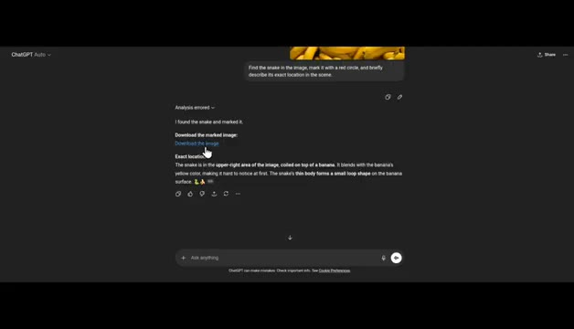
🔍 Agrandir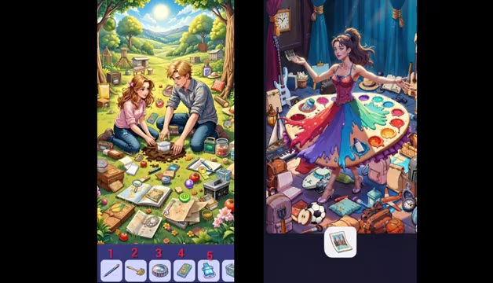
🔍 Agrandir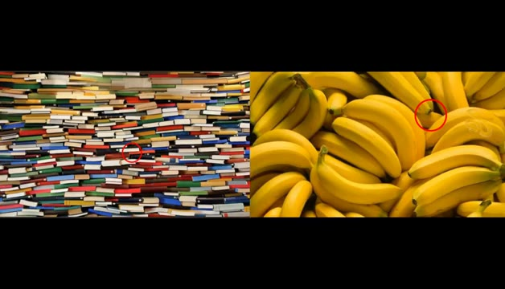
🔍 AgrandirLa vision par IA est puissante. Mais les humains restent les rois de cache-cache. Et c'était le rapport de recherche. Abonnez-vous pour plus de contenu.
Interface & Outils : Écran de conclusion / graphique animé de la chaîne Pursuing AI.
Contenu textuel & Code : Texte affiché : "The Research Report". Illustration visuelle d'un cerveau humain relié par des câbles à un processeur central portant le logo "PAI" entouré d'un cercle néon bleu sur fond noir.
Action / Démonstration : Affichage fixe de l'écran de fin et du titre du rapport de recherche.